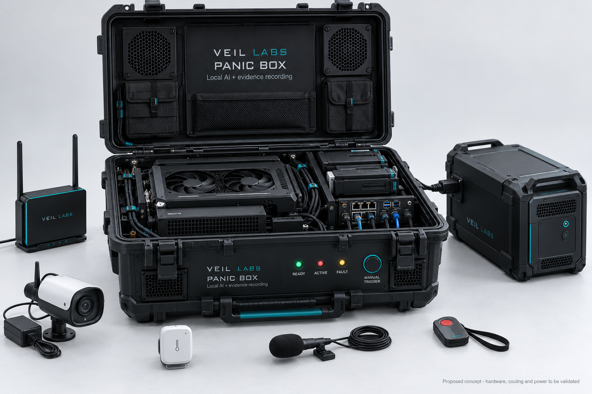

System concept
A rugged case with an external panic button, a small status display, battery backup and a wireless handheld trigger.
A portable monitoring system intended to continuously capture synchronized camera, microphone and environmental data before and after a reported event.

A rugged case with an external panic button, a small status display, battery backup and a wireless handheld trigger.
Continuous local acquisition, event-driven anomaly flags and protected pre/post-event recordings with remote base-station notifications.
Document false alarm rate, network outages, clock synchronization, equipment faults and environmental contamination.
Budgetary RFQ and engineering feasibility planning; construction and purchasing are not authorized.
VEIL’s planned instruments share a common emphasis: synchronized measurement, rigorous controls, raw evidence preservation and transparent review.
Contact · Collaborate · Support →